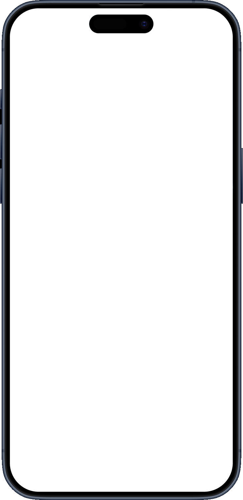

[01] · timer
Focus. Break.
Repeat.
Focus & break timer with custom lengths, sounds and haptics.


[02] · tasks
Your list.
Everywhere.
Simple tasks, synced across your devices.
[03] · dynamic island
Lives in
the island.
Live countdown on the island and lock screen. Hold it to pause or switch modes.
↑ tap or hold the island on the phone →
[04] · spotify
Music,
in reach.
Optional: see and control what’s playing. Try it here with music made live in your browser, random every track and free of copyright.
[05] · google calendar
Every block,
logged.
Optional: log finished focus blocks to a “Focus” calendar.
How Focus uses Google Calendar. Connecting Google Calendar is optional. When you connect, Focus creates one secondary calendar named “Focus” in your Google account and adds an event to it each time you finish a focus block (and each break, if you turn that on). Focus requests only the calendar.app.created permission, so it can access only the calendar it created — it cannot see, change or delete your other calendars or events. You can unlink at any time in the app’s Settings.
Read the Privacy Policy for full details.
[06] · source
Source available.
Yours to read.
The code is public to read on GitHub. All rights reserved.